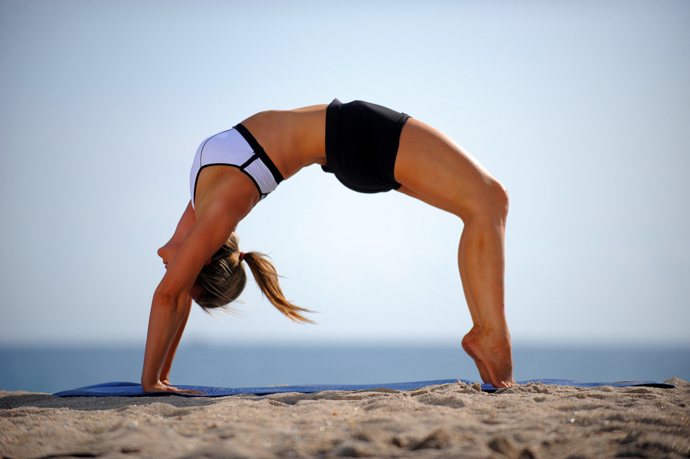
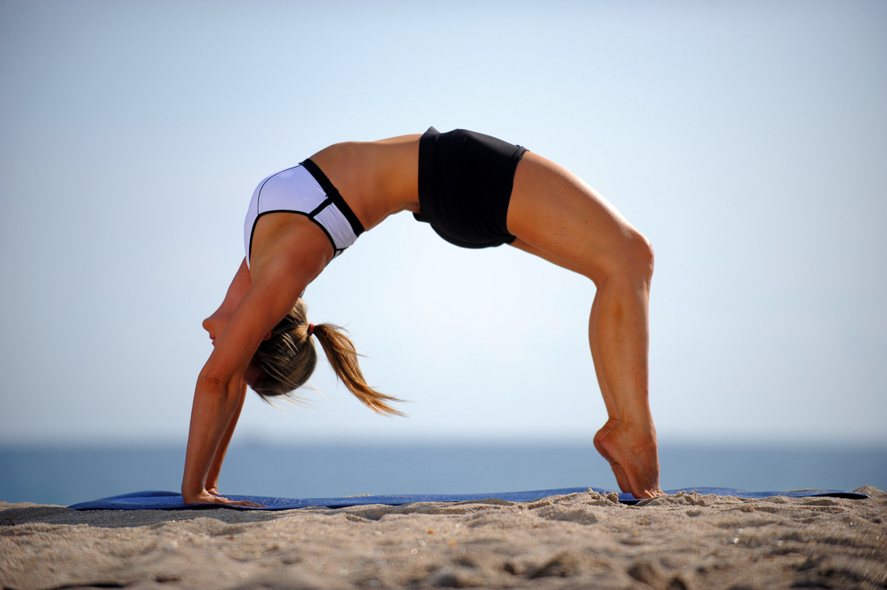

4 types of exercises
 

ENDORENCE
Endurance, or aerobic, activities increase your breathing and heart rate. They keep your heart, lungs, and circulatory system healthy and improve your overall fitness. Building your endurance makes it easier to carry out many of your everyday activities.
STRENGTH
Strength exercises make your muscles stronger. Even small increases in strength can make a big difference in your ability to stay independent and carry out everyday activities, such as climbing stairs and carrying groceries. These exercises also are called "strength training" or "resistance training."
BALANCE
Balance exercises help prevent falls, a common problem in older adults. Many lower-body strength exercises also will improve your balance.
FLEXABILITY
Flexibility exercises stretch your muscles and can help your body stay limber. Being flexible gives you more freedom of movement for other exercises as well as for your everyday activities.